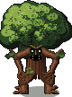
Ходячий дуб
деревьяхватает
Ночью выбирается из земли, тянется к гномам и хватает зазевавшегося, а ещё бьёт по зданиям. Боится большого костра.
Карточки нарисованы настоящими функциями игры, поэтому выглядят так же, как в деревне.
Выходит с наступлением темноты. Большой костёр отпугивает её, фонарь не даёт заблудиться, а герой и рекруты гильдий могут дать отпор.

Ночью выбирается из земли, тянется к гномам и хватает зазевавшегося, а ещё бьёт по зданиям. Боится большого костра.
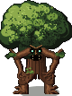
Тонкая и быстрая сестра дуба. Тоже выходит по ночам и уносит гнома, который остался без света.

Высокая, тянет руку издалека. Отпугивается большим костром.

Тёмная лапа, которую в лесу легко принять за обычную ёлку, пока та не пошла.
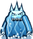
Водяной элементаль: поднимается из воды, бьёт струёй, сжимает гнома волной и утаскивает. Оставляет за собой лужи.
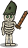
Встаёт из кладбища ночью. Бродит у своей могилы и рубит ржавым мечом тех, кто подошёл. Гном, павший от скелета, нередко встаёт скелетом сам. Пугается призраков.
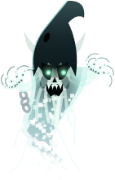
Прозрачная гномья тень. Безобиден, но пугает всех, кого видит. Его можно задобрить хлебом — он успокоится, поблагодарит и иногда оставит золотую монету.
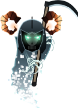
Нежить второго уровня. Появляется с третьей ночи на окраине, к глубокой ночи. Хлебом не задобрить, молитвой героя не изгнать: чем больше потерь, тем больше жнецов.
Появляются, когда растёт гнев Малгора (см. лор). Это не нечисть: они ходят в набеги за добычей и теряют интерес к деревне, когда башня гаснет.
Летает и хрупок. Высматривает деревню; долетел живой — Малгор «знает» вас. здоровье 6.
Пеший налётчик в индиго-латах, глаза светятся зелёным. Грабит склады. здоровье 34, удар 3–6.
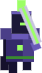
Крепкий и умеет парировать. Приходит в поздние ночи во время осады. здоровье 100, удар 8–13.
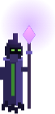
Хозяин Чёрного шпиля, босс. Бой идёт в три фазы: призыв, зелёный огонь, ярость. здоровье 440, удар 9–14.
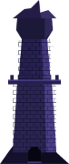
Башня Малгора на дальнем краю карты. Окна светятся ядовито-зелёным по вечерам, на подступах горят дозорные огни.
Живут в логовах в лесу и ни на кого не нападают, пока их не тронут. Герой или рекруты могут напасть сами; тронутый нейтрал дерётся и зовёт своих. За победу — добыча и опыт.
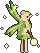
Крошка с цветочной короной и ярко-зелёными крыльями. Живёт в домике на дереве и умеет колдовать.
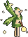
Живёт в грибном кольце. Нейтральна, пока её не тронули; умеет колдовать.
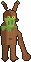
Хозяин леса, обитает в дупле. Если за сутки срублено много деревьев, ночью может наслать на дровосеков блуждания.
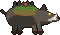
Охраняет лёжку. Сильный и упрямый: бросается, если тронуть своих.
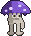
Гриб-переросток из пятна чумных грибов. Не трогает тех, кто не трогает его.
Обычное зверьё вокруг деревни. Часть его можно приручить, часть — отпугнуть, а от волков лучше беречь груз.
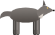
Злой: подкрадывается к тем, кто несёт груз, и утаскивает его.
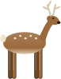
Нейтральный: пасётся и убегает от людей.
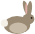
Нейтральный: пасётся и убегает от людей.
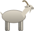
Добрая: пастух может её приручить. Вьючная коза возит по 2 груза за раз.
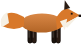
Рыжая лесная жительница; часть живой природы вокруг деревни.
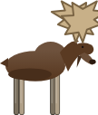
Крупный лесной зверь с ветвистыми рогами.
Обитатель двора. Тушка идёт в трактир и делится на 4 куска.
Домашняя птица, на воде и на суше.